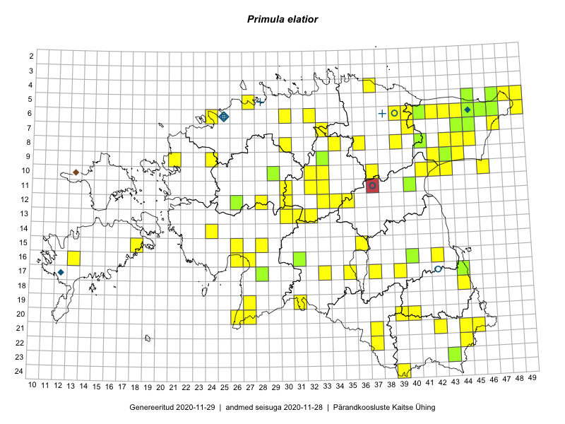

Primula elatior
Uuendatud: 2016-12-07
Kaardile koondatud taksonid: Primula elatior (L.) Hill

Kaart põhineb 120 kirjel, neist vaatlusi 118 ja eksemplare 2. Taksonit on leitud 73 ruudust.
| Ruut | Vaatleja(d) | Vaatlusaeg | Kirje tüüp | Viide andmebaasikirjele |
|---|---|---|---|---|
| 07-45 | Thea Kull | 2015-04-27 | punkt | vaata PlutoFis |
| 17-39 | Meeli Mesipuu, Kadri Tali | 2015-04-30 | punkt | vaata PlutoFis |
| 17-39 | Meeli Mesipuu, Kadri Tali | 2015-04-30 | punkt | vaata PlutoFis |
| 08-43 | Meeli Mesipuu, Liina Oja | 2015-04-27 | ruut/ala | vaata PlutoFis |
| 08-43 | Meeli Mesipuu, Liina Oja | 2015-04-27 | punkt | vaata PlutoFis |
| 08-43 | Meeli Mesipuu, Liina Oja | 2015-04-27 | punkt | vaata PlutoFis |
| 08-43 | Meeli Mesipuu, Liina Oja | 2015-04-27 | ruut/ala | vaata PlutoFis |
| 13-30 | Peedu Saar | 2015-05-09 | punkt | vaata PlutoFis |
| 12-28 | Peedu Saar, Timo Luhamäe | 2015-05-09 | punkt | vaata PlutoFis |
| 12-30 | Peedu Saar, Timo Luhamäe | 2015-05-10 | punkt | vaata PlutoFis |
| 06-39 | Peedu Saar, Timo Luhamäe | 2015-05-13 | punkt | vaata PlutoFis |
| 06-40 | Peedu Saar, Timo Luhamäe | 2015-05-13 | punkt | vaata PlutoFis |
| 06-40 | Peedu Saar, Timo Luhamäe | 2015-05-13 | punkt | vaata PlutoFis |
| 06-40 | Peedu Saar, Timo Luhamäe | 2015-05-13 | punkt | vaata PlutoFis |
| 09-43 | Peedu Saar | 2015-05-14 | punkt | vaata PlutoFis |
| 10-43 | Peedu Saar | 2015-05-14 | punkt | vaata PlutoFis |
| 10-42 | Peedu Saar | 2015-05-14 | punkt | vaata PlutoFis |
| 10-42 | Peedu Saar | 2015-05-14 | punkt | vaata PlutoFis |
| 16-42 | Peedu Saar | 2015-05-01 | punkt | vaata PlutoFis |
| 12-33 | Toomas Kukk, Indrek Tammekänd | 2015-05-10 | punkt | vaata PlutoFis |
| 12-34 | Toomas Kukk, Indrek Tammekänd | 2015-05-10 | punkt | vaata PlutoFis |
| 10-41 | Toomas Kukk, Raivo Kalle | 2015-05-14 | punkt | vaata PlutoFis |
| 11-40 | Toomas Kukk, Raivo Kalle | 2015-05-12 | punkt | vaata PlutoFis |
| 17-44 | Eerik Leibak, Toomas Kukk | 2015-05-03 | ruut/ala | vaata PlutoFis |
| 17-44 | Eerik Leibak, Toomas Kukk | 2015-05-03 | ruut/ala | vaata PlutoFis |
| 17-44 | Toomas Kukk, Eerik Leibak | 2015-05-03 | punkt | vaata PlutoFis |
| 18-44 | Toomas Kukk, Eerik Leibak | 2015-05-03 | punkt | vaata PlutoFis |
| 06-42 | Toomas Kukk, Eerik Leibak | 2015-04-27 | ruut/ala | vaata PlutoFis |
| 06-49 | Toomas Kukk, Eerik Leibak | 2015-04-26 | ruut/ala | vaata PlutoFis |
| 05-45 | Toomas Kukk, Eerik Leibak | 2015-04-25 | punkt | vaata PlutoFis |
| 05-48 | Toomas Kukk, Eerik Leibak | 2015-04-26 | punkt | vaata PlutoFis |
| 05-48 | Toomas Kukk, Eerik Leibak | 2015-04-26 | punkt | vaata PlutoFis |
| 05-48 | Toomas Kukk, Eerik Leibak | 2015-04-26 | punkt | vaata PlutoFis |
| 05-49 | Toomas Kukk, Eerik Leibak | 2015-04-26 | punkt | vaata PlutoFis |
| 06-49 | Toomas Kukk, Eerik Leibak | 2015-04-26 | punkt | vaata PlutoFis |
| 06-42 | Toomas Kukk, Eerik Leibak | 2015-04-27 | punkt | vaata PlutoFis |
| 06-42 | Toomas Kukk, Eerik Leibak | 2015-04-27 | punkt | vaata PlutoFis |
| 08-45 | Thea Kull, Peedu Saar | 2015-04-27 | punkt | vaata PlutoFis |
| 08-45 | Thea Kull, Peedu Saar | 2015-04-27 | punkt | vaata PlutoFis |
| 08-45 | Thea Kull, Peedu Saar | 2015-04-27 | punkt | vaata PlutoFis |
| 08-44 | Thea Kull, Peedu Saar | 2015-04-27 | punkt | vaata PlutoFis |
| 08-44 | Thea Kull, Peedu Saar | 2015-04-27 | punkt | vaata PlutoFis |
| 07-45 | Thea Kull, Peedu Saar | 2015-04-27 | punkt | vaata PlutoFis |
| 06-41 | Thea Kull, Peedu Saar | 2015-04-25 | punkt | vaata PlutoFis |
| 06-41 | Thea Kull, Peedu Saar | 2015-04-25 | punkt | vaata PlutoFis |
| 06-40 | Thea Kull, Peedu Saar | 2015-04-25 | punkt | vaata PlutoFis |
| 08-41 | Thea Kull, Peedu Saar | 2015-04-25 | punkt | vaata PlutoFis |
| 06-45 | Thea Kull, Peedu Saar | 2015-04-26 | punkt | vaata PlutoFis |
| 06-47 | Thea Kull, Peedu Saar | 2015-04-26 | punkt | vaata PlutoFis |
| 10-33 | Thea Kull, Hannes Pehlak | 2015-05-10 | punkt | vaata PlutoFis |
| 11-33 | Thea Kull, Hannes Pehlak | 2015-05-10 | punkt | vaata PlutoFis |
| 11-33 | Thea Kull, Hannes Pehlak | 2015-05-10 | punkt | vaata PlutoFis |
| 11-33 | Thea Kull, Hannes Pehlak | 2015-05-10 | punkt | vaata PlutoFis |
| 07-47 | Thea Kull, Eerik Leibak | 2015-07-21 | punkt | vaata PlutoFis |
| 11-32 | Ott Luuk, Toivo Sepp | 2015-05-18 | punkt | vaata PlutoFis |
| 11-30 | Ott Luuk, Toivo Sepp | 2015-05-18 | punkt | vaata PlutoFis |
| 20-27 | Ott Luuk, Eerik Leibak, Liisa Rennel | 2015-05-20 | ruut/ala | vaata PlutoFis |
| 08-34 | Jana-Maria Habicht, Ester Valdvee | 2015-05-10 | punkt | vaata PlutoFis |
| 07-33 | Jana-Maria Habicht, Ester Valdvee | 2015-05-29 | punkt | vaata PlutoFis |
| 08-39 | Meeli Mesipuu, Maret Gerz | 2015-05-12 | punkt | vaata PlutoFis |
| 07-40 | Meeli Mesipuu, Maret Gerz | 2015-05-13 | ruut/ala | vaata PlutoFis |
| 20-26 | Indrek Tammekänd | 2015-05-15 | punkt | vaata PlutoFis |
| 19-27 | Indrek Tammekänd | 2015-05-16 | punkt | vaata PlutoFis |
| 15-26 | Indrek Tammekänd | 2015-05-12 | punkt | vaata PlutoFis |
| 10-37 | Toivo Sepp, Eerik Leibak | 2015-05-11 | ruut/ala | vaata PlutoFis |
| 10-37 | Toivo Sepp, Eerik Leibak | 2015-05-11 | punkt | vaata PlutoFis |
| 08-36 | Toivo Sepp, Eerik Leibak | 2015-05-12 | ruut/ala | vaata PlutoFis |
| 08-36 | Toivo Sepp, Eerik Leibak | 2015-05-12 | punkt | vaata PlutoFis |
| 07-44 | Meeli Mesipuu, Liina Oja | 2015-04-27 | ruut/ala | vaata PlutoFis |
| 07-44 | Meeli Mesipuu, Liina Oja | 2015-04-27 | punkt | vaata PlutoFis |
| 07-44 | Meeli Mesipuu, Liina Oja | 2015-04-27 | punkt | vaata PlutoFis |
| 07-44 | Meeli Mesipuu, Liina Oja | 2015-04-27 | punkt | vaata PlutoFis |
| 07-44 | Meeli Mesipuu, Liina Oja | 2015-04-27 | punkt | vaata PlutoFis |
| 06-43 | Meeli Mesipuu, Liina Oja | 2015-04-26 | ruut/ala | vaata PlutoFis |
| 06-43 | Meeli Mesipuu, Liina Oja | 2015-04-26 | punkt | vaata PlutoFis |
| 06-43 | Meeli Mesipuu, Liina Oja | 2015-04-26 | punkt | vaata PlutoFis |
| 06-43 | Meeli Mesipuu, Liina Oja | 2015-04-26 | punkt | vaata PlutoFis |
| 09-42 | Timo Luhamäe, Liina Oja | 2015-05-14 | punkt | vaata PlutoFis |
| 06-44 | Liina Oja, Meeli Mesipuu | 2015-04-25 | ruut/ala | vaata PlutoFis |
| 16-40 | Elle Rajandu | 2015-04-27 | ruut/ala | vaata PlutoFis |
| 07-40 | Maret Gerz, Meeli Mesipuu | 2015-05-13 | punkt | vaata PlutoFis |
| 17-33 | Maria Abakumova | 2015-05-04 | punkt | vaata PlutoFis |
| 08-41 | Timo Luhamäe, Liina Oja | 2015-05-14 | punkt | vaata PlutoFis |
| 19-31 | Ott Luuk, Indrek Tammekänd | 2015-05-22 | punkt | vaata PlutoFis |
| 13-31 | Ott Luuk, Liina Oja | 2015-05-10 | punkt | vaata PlutoFis |
| 12-35 | Ott Luuk, Liina Oja | 2015-05-11 | punkt | vaata PlutoFis |
| 06-44 | Meeli Mesipuu, Liina Oja | 2015-04-25 | punkt | vaata PlutoFis |
| 21-42 | Thea Kull, Meeli Mesipuu | 2016-04-26 | punkt | vaata PlutoFis |
| 21-42 | Thea Kull, Meeli Mesipuu | 2016-04-26 | punkt | vaata PlutoFis |
| 24-39 | Thea Kull, Meeli Mesipuu | 2016-04-27 | punkt | vaata PlutoFis |
| 24-39 | Meeli Mesipuu, Thea Kull | 2016-04-27 | ruut/ala | vaata PlutoFis |
| 16-26 | Thea Kull, Meeli Mesipuu | 2016-04-29 | punkt | vaata PlutoFis |
| 16-27 | Thea Kull, Meeli Mesipuu | 2016-04-29 | punkt | vaata PlutoFis |
| 16-27 | Meeli Mesipuu, Thea Kull | 2016-04-29 | punkt | vaata PlutoFis |
| 22-44 | Toomas Kukk, Eerik Leibak | 2016-04-26 | ruut/ala | vaata PlutoFis |
| 20-39 | Toomas Kukk, Eerik Leibak | 2016-04-25 | ruut/ala | vaata PlutoFis |
| 20-40 | Toomas Kukk, Eerik Leibak | 2016-04-25 | ruut/ala | vaata PlutoFis |
| 16-31 | Toomas Kukk, Eerik Leibak | 2016-04-28 | ruut/ala | vaata PlutoFis |
| 20-39 | Toomas Kukk, Eerik Leibak | 2016-04-25 | punkt | vaata PlutoFis |
| 20-40 | Toomas Kukk, Eerik Leibak | 2016-04-25 | punkt | vaata PlutoFis |
| 22-44 | Toomas Kukk, Eerik Leibak | 2016-04-26 | punkt | vaata PlutoFis |
| 16-31 | Toomas Kukk, Eerik Leibak | 2016-04-28 | punkt | vaata PlutoFis |
| 16-31 | Toomas Kukk, Eerik Leibak | 2016-04-28 | punkt | vaata PlutoFis |
| 16-31 | Toomas Kukk, Eerik Leibak | 2016-04-28 | punkt | vaata PlutoFis |
| 17-37 | Ott Luuk, Tiit Hallikma | 2016-04-25 | punkt | vaata PlutoFis |
| 15-18 | Meeli Mesipuu | 2016-05-04 | punkt | vaata PlutoFis |
| 15-18 | Meeli Mesipuu | 2016-05-04 | punkt | vaata PlutoFis |
| 15-36 | Ott Luuk, Thea Kull | 2016-05-05 | punkt | vaata PlutoFis |
| 17-35 | Ott Luuk, Thea Kull | 2016-05-05 | ruut/ala | vaata PlutoFis |
| 06-24 | Tõnu Ploompuu | 2016-05-07 | ruut/ala | vaata PlutoFis |
| 14-24 | Toomas Kukk, Indrek Tammekänd | 2016-04-29 | punkt | vaata PlutoFis |
| 08-30 | Thea Kull, Meeli Mesipuu | 2016-05-13 | punkt | vaata PlutoFis |
| 10-46 | Eerik Leibak | 2016-05-12 | ruut/ala | vaata PlutoFis |
| 09-44 | Eerik Leibak | 2016-05-18 | ruut/ala | vaata PlutoFis |
| 10-46 | Eerik Leibak | 2016-05-12 | punkt | vaata PlutoFis |
| 09-44 | Eerik Leibak | 2016-05-18 | punkt | vaata PlutoFis |
| 21-44 | Tiit Hallikma, Ott Luuk | 2016-04-26 | punkt | vaata PlutoFis |
| 15-28 | Tiit Hallikma, Ott Luuk | 2016-04-28 | punkt | vaata PlutoFis |
| 09-33 | Jana-Maria Habicht | 2015-05-09 | eksemplar | vaata PlutoFis |
| 09-33 | Jana-Maria Habicht | 2015-05-09 | eksemplar | vaata PlutoFis |